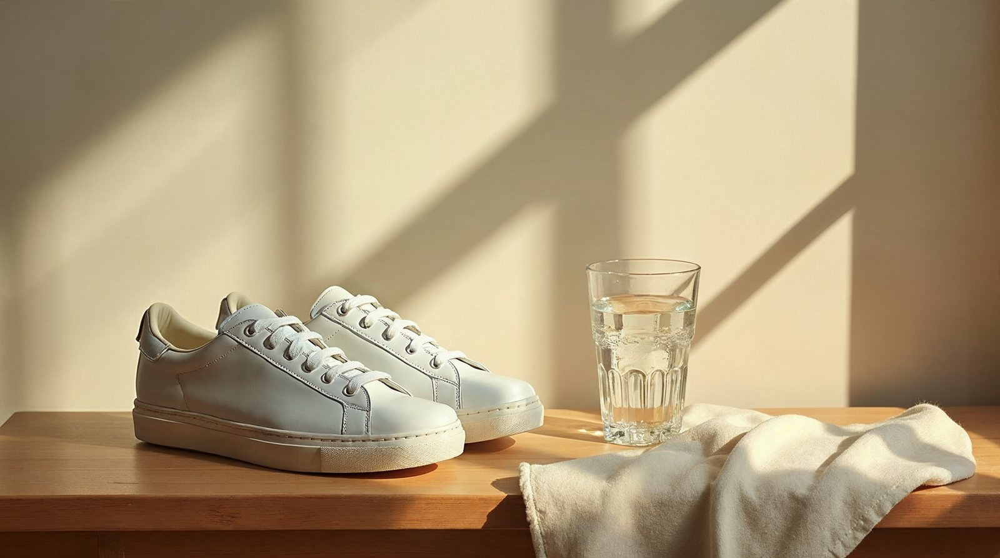
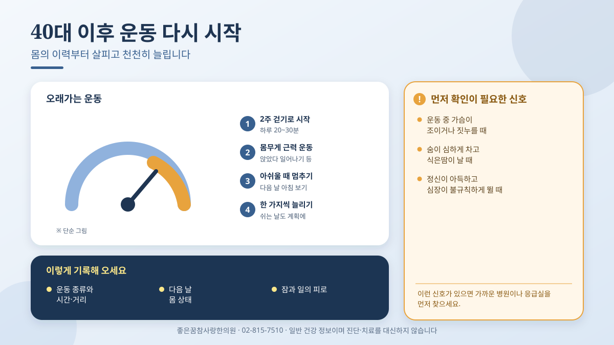

이종호 한의사 감수좋은꿈참사랑한의원 대표원장 (한의사 면허번호 19769)발행 2026-11-26 · 수정 2026-11-26
이 글의 차례
새해를 앞둔 어느 저녁, 오래 묵혀 둔 운동화를 꺼내 신발장 앞에 놓아 봅니다. 회사 일과 아이 키우는 일에 밀려 운동을 놓은 지 몇 년, 건강검진 결과지에 적힌 숫자들이 마음에 걸려 다시 시작해 보기로 합니다. 그런데 한편으로는 걱정도 듭니다. '예전처럼 뛰어도 괜찮을까.'
진료실에서 이런 분들을 자주 만납니다. 운동을 다시 시작하겠다는 결심은 무척 반가운 일입니다. 다만 그 결심이 오래가려면, 의욕이 가장 클 때인 처음 몇 주를 어떻게 보내느냐가 중요합니다. 다시 시작한 운동을 그만두게 되는 가장 흔한 이유가 초반의 통증이기 때문입니다.
마흔을 넘기면 몸은 예전과 조금 다르게 반응합니다. 근육량은 천천히 줄고, 힘줄과 인대는 덜 유연해지며, 회복에 걸리는 시간도 길어집니다. 마음은 이십 대에 뛰던 기억을 갖고 있는데 몸은 그 사이 시간을 지나왔으니, 둘 사이의 차이를 먼저 인정하는 것이 출발점입니다.
저는 이런 분들께 "예전에 어떤 운동을 하셨고, 지금은 어떤 운동을 시작하려 하시는지", 그리고 "예전에 다친 곳이 있는지"를 먼저 여쭙니다. 몸의 이력을 알면 어디부터 조심하고 어떤 순서로 늘려 가면 좋을지 함께 그려 볼 수 있습니다.
운동을 다시 시작하기 전 왜 점검이 필요할까요?
운동을 쉬는 동안 몸에는 눈에 잘 띄지 않는 변화가 쌓입니다. 앉아 지내는 시간이 길어지며 고관절과 등이 굳고, 엉덩이와 허벅지 근육은 조금씩 힘을 잃습니다. 예전에 다쳤던 발목이나 허리는 평소엔 조용하다가 운동량이 늘면 다시 신호를 보내기도 합니다.
혈압이나 혈당, 콜레스테롤처럼 숫자로만 보이는 변화도 있습니다. 평소에는 아무 느낌이 없어도, 갑자기 숨이 차게 운동하면 심장과 혈관에 걸리는 부담이 커집니다. 그래서 숫자를 알고 시작하는 것과 모르고 시작하는 것은 운동 강도를 정하는 데 큰 차이를 만듭니다.
점검의 목적은 운동을 막는 것이 아니라, 오래 이어 갈 수 있는 방법을 찾는 것입니다. 내 몸의 약한 고리를 미리 알면 그 부분을 먼저 다독이며 시작할 수 있고, 다쳐서 그만두는 일을 줄일 수 있습니다.
왜 오랜만에 운동하면 쉽게 다칠까요
가장 큰 이유는 기억과 현재의 차이입니다. 예전에 10킬로미터를 뛰었던 분은 다시 시작하는 날에도 5킬로미터쯤은 괜찮을 것이라 생각하기 쉽습니다. 심폐 기능은 몇 주 만에 따라오지만, 무릎과 발목, 아킬레스건은 그 속도를 따라가지 못합니다.
회복 속도가 달라진 것도 이유입니다. 젊을 때는 하루 자고 나면 근육통이 풀렸지만, 지금은 이틀 사흘이 걸리기도 합니다. 회복되기 전에 다시 운동하면 피로가 쌓여 작은 부상으로 이어지기 쉽습니다.
생활의 피로도 무시할 수 없습니다. 일과 가정의 책임이 가장 무거운 시기라 잠이 짧고 긴장이 높은 날이 많습니다. 잠을 설친 날, 야근한 날 무리해서 운동하면 몸이 더 쉽게 무너집니다. 운동 계획은 내 하루의 무게까지 함께 고려해 세우는 것이 좋습니다.
예전에 다친 곳은 약한 고리가 됩니다. 발목을 자주 접질렸던 분, 허리를 삐끗한 적이 있는 분, 어깨가 한 번 빠졌던 분은 그 부분이 다시 다치거나, 그 부분을 아끼느라 다른 곳에 무리가 가기 쉽습니다.
스스로 해 볼 수 있는 몸 점검
먼저 한 발로 서기를 해 보세요. 눈을 뜨고 양쪽 각각 30초씩 버틸 수 있는지, 한쪽만 유난히 흔들리는지 봅니다. 균형이 많이 흔들린다면 달리기나 등산 같은 운동을 시작하기 전에 균형 연습을 먼저 해 두는 것이 좋습니다.
의자에서 팔짱을 끼고 앉았다 일어나기를 몇 번 해 보세요. 팔을 쓰지 않고 가볍게 일어날 수 있는지, 무릎이 안쪽으로 모이지 않는지 확인합니다. 다리 힘이 부족하다면 무게를 드는 운동보다 내 몸무게로 하는 동작부터 시작합니다.
양팔을 머리 위로 올려 귀 옆에 붙여 보고, 선 채로 앞으로 숙여 손끝이 어디까지 내려가는지도 봅니다. 어깨와 고관절, 허벅지 뒤가 얼마나 굳어 있는지 짐작할 수 있습니다. 계단 두세 층을 오른 뒤 숨이 얼마나 차는지도 기억해 두세요.
어떤 운동부터 시작하면 좋을까요
몇 년 쉬었다 시작하신다면 처음 몇 주는 걷기처럼 충격이 적은 운동으로 몸의 바탕을 다지는 것을 권합니다. 빠르게 걷기, 실내 자전거, 수영처럼 관절에 부담이 적은 운동으로 심폐 기능과 다리 힘을 천천히 깨웁니다.
여기에 내 몸무게로 하는 근력 운동을 더합니다. 의자에서 앉았다 일어나기, 벽 짚고 팔굽혀펴기, 엉덩이 들기, 까치발 들기처럼 간단한 동작을 일주일에 두세 번 해 보세요. 근육이 받쳐 주면 다음 단계의 운동에서 관절이 덜 지칩니다.
달리기, 무거운 웨이트, 축구나 배드민턴처럼 방향을 갑자기 바꾸는 운동은 그다음입니다. 걷기와 기초 근력 운동을 몇 주 동안 무리 없이 소화하고, 다음 날 아침 몸이 개운하다면 그때 하나씩 더해 갑니다.
하려는 운동에 따라 먼저 살필 곳
달리기를 다시 시작하려는 분은 무릎과 발목, 아킬레스건, 발바닥을 먼저 봅니다. 한 발로 서서 가볍게 뛰어 보았을 때 무릎이 시큰하거나 발목이 흔들린다면, 걷기와 까치발 들기, 한 발 서기로 몇 주 준비한 뒤 걷기와 달리기를 번갈아 하는 방식으로 시작합니다.
헬스장에서 웨이트를 하려는 분은 어깨와 허리를 먼저 봅니다. 팔을 머리 위로 편하게 올릴 수 있는지, 허리를 숙일 때 고관절이 충분히 접히는지 확인하고, 빈 봉이나 가벼운 무게로 자세를 먼저 익힌 뒤 무게를 올립니다.
등산을 하려는 분은 무릎과 발목, 허리를 함께 봅니다. 특히 내려올 때 무릎에 부담이 크니 처음에는 낮은 산이나 둘레길부터 시작하고, 스틱을 쓰면 무릎 부담을 덜 수 있습니다. 축구나 배드민턴처럼 방향을 갑자기 바꾸는 운동은 발목과 종아리를 충분히 준비한 뒤가 좋습니다.
첫 몇 주는 어떻게 보내면 좋을까요
처음에는 '조금 아쉽다' 싶은 곳에서 멈추는 것이 가장 중요합니다. 할 수 있을 것 같아도 계획한 양의 절반쯤에서 마무리하고, 다음 날 몸의 반응을 봅니다. 다음 날 아침이 개운하면 그만큼이 지금 몸에 맞는 양입니다.
운동량은 일주일에 조금씩만 늘립니다. 시간이든 거리든 무게든, 한꺼번에 여러 가지를 늘리지 말고 하나씩 늘려 가세요. 그래야 어디서 몸이 버거운지 알아차릴 수 있습니다.
쉬는 날도 운동 계획의 일부입니다. 매일 하기보다 하루걸러 하거나, 강도가 높은 날 다음에는 가벼운 날을 넣어 주세요. 회복하는 동안 몸은 더 단단해집니다.
먼저 이렇게 여쭙니다
- 예전에 어떤 운동을 얼마나 하셨고, 몇 년 정도 쉬셨나요?
- 다시 시작하려는 운동은 무엇이고, 일주일에 몇 번 생각하고 계신가요?
- 예전에 다친 곳이나 수술받은 곳이 있나요?
- 혈압약, 당뇨약, 콜레스테롤 약 등 드시는 약이 있나요?
- 최근 건강검진에서 들은 이야기가 있나요?
- 잠은 몇 시간쯤 주무시고, 일의 피로는 어느 정도인가요?
최근 건강검진 결과지를 가져와 주시면 혈압과 혈당, 콜레스테롤, 체중 변화를 함께 보며 운동 강도를 정하는 데 참고합니다. 가족 가운데 심장이나 혈관 질환을 앓으신 분이 있다면 그것도 알려 주세요.
일상에서 먼저 해 볼 수 있는 것
- 운동 시작 전 2주 동안 하루 20~30분 걷기로 몸 깨우기
- 앉았다 일어나기, 엉덩이 들기, 까치발 들기를 일주일에 두세 번
- 운동 전 5~10분 가볍게 몸 데우기, 운동 뒤 천천히 늘리기
- 운동량은 일주일에 한 가지씩만 조금 늘리기
- 잠을 설친 날, 야근한 날은 가볍게 하거나 쉬기
- 발에 맞는 운동화를 새로 장만하기
운동화는 생각보다 중요합니다. 몇 년 신발장에 있던 운동화는 밑창의 쿠션이 굳어 있을 수 있습니다. 하려는 운동에 맞는 신발을 새로 장만하고, 발이 붓는 저녁 무렵에 신어 보고 고르시는 것이 좋습니다.
물과 식사도 챙겨 주세요. 운동을 시작하며 식사를 크게 줄이는 분이 많은데, 근육이 회복할 재료가 부족하면 피로가 쌓이고 다치기 쉬워집니다. 끼니마다 단백질 반찬을 조금씩 챙기고, 운동 전후 물을 나눠 드시길 권합니다.
혈압약이나 당뇨약을 드시는 분은 운동하는 시간과 약 드시는 시간을 함께 살펴보세요. 운동 중 어지럽거나 기운이 갑자기 빠지는 느낌이 들면 쉬어 가고, 이런 일이 반복되면 처방한 선생님과 상의하시는 것이 좋습니다.
다시 시작한 분들이 자주 헷갈리는 것
첫째, 아파야 운동이 된다는 생각입니다. 근육이 적당히 뻐근한 것은 괜찮지만, 관절이 시큰하거나 한 자리가 콕 아프다면 그건 운동 효과가 아니라 몸이 보내는 경고에 가깝습니다. 넓게 뻐근한지, 한 점이 아픈지 나눠 보세요.
둘째, 빨리 예전 몸을 되찾아야 한다는 생각입니다. 몇 년 쉰 몸을 몇 주 만에 되돌리려 하면 다치기 쉽습니다. 쉰 기간만큼은 아니더라도, 몇 달을 두고 천천히 되찾는다고 생각하시면 마음도 몸도 한결 편합니다.
셋째, 주말에 몰아서 하면 된다는 생각입니다. 평일 내내 앉아 있다가 주말에 몇 시간 몰아서 운동하면 몸이 감당하기 어렵습니다. 평일에 짧게라도 자주 움직이는 쪽이 같은 운동량이라도 훨씬 덜 다칩니다.
한의원에서 함께 살필 수 있는 경우
- 운동을 다시 시작하려는데 예전에 다친 허리, 무릎, 발목이 걱정되는 경우
- 운동을 시작하고 몇 주 만에 관절이나 힘줄이 시큰해진 경우
- 운동 뒤 근육통이 오래가고 잠까지 설치는 경우
- 늘 피곤하고 몸이 무거워 운동을 시작할 엄두가 나지 않는 경우
- 몸의 좌우 차이나 자세 때문에 한쪽만 자꾸 불편한 경우
좋은꿈참사랑한의원에 오시면 먼저 아래 '먼저 확인이 필요한' 신호가 없는지부터 봅니다. 그다음 맥을 짚고, 관절의 움직임과 균형, 예전에 다친 자리를 함께 살핍니다. 필요하다고 판단되면 인바디로 근육량과 좌우 차이를 확인합니다.
진찰한 내용을 바탕으로 침, 약침, 물리치료, 추나 가운데 지금 상태에 맞는 것을 정하고, 예전부터 남아 있던 힘줄 통증이 있다면 체외충격파를 상의하기도 합니다. 피로와 잠이 함께 무거운 분이 한약을 상의할 때는 드시는 약을 확인한 뒤 신중히 정합니다.
운동 계획도 함께 세웁니다. 어떤 운동을, 어떤 순서로, 얼마나 늘려 갈지 몸 상태에 맞춰 이야기하고, 내과 진료를 받고 계신다면 그 진료와 나란히 가는 것으로 생각해 주시면 됩니다.
이렇게 기록해 오시면 상담이 쉬워집니다
- 운동한 날짜, 종류, 시간이나 거리
- 운동 중, 직후, 다음 날 아침 몸 상태
- 불편했던 자리와 동작
- 잠든 시각과 깬 시각, 일의 피로
- 혈압을 재신다면 운동 전후 숫자
"빠르게 걷기 30분, 다음 날 오른쪽 무릎 살짝 시큰"처럼 짧게 적어 오셔도 충분합니다. 몇 주만 모여도 몸이 어떻게 적응해 가는지 보이기 시작합니다.

오래가는 운동을 위해
운동을 다시 시작하겠다는 마음은 그 자체로 소중합니다. 그 마음을 오래 지키려면, 몸이 따라올 시간을 넉넉히 주는 것이 필요합니다. 천천히 시작하는 것이 결국 가장 멀리 가는 방법입니다.
운동을 다시 시작하는 일은 몸만이 아니라 하루의 시간표를 다시 짜는 일이기도 합니다. 출근 전 20분, 점심 뒤 10분, 저녁 식사 뒤 30분처럼 내 생활에 무리 없이 들어갈 자리를 먼저 찾아 두시면, 바쁜 주에도 운동이 쉽게 끊기지 않습니다.
이번 주에는 하루 30분 걷기와 한 발 서기 30초, 이 두 가지로 시작해 보세요. 다음에 오시면 몸이 어떻게 반응했는지 함께 살펴보고 다음 걸음을 정해 보겠습니다.
이런 증상은 먼저 확인이 필요합니다
- 운동 중 가슴이 조이거나 짓누르듯 아프고 숨이 심하게 차며 식은땀이 나는 경우
- 운동 중 갑자기 정신이 아득해지거나 쓰러질 것 같고 심장이 불규칙하게 심하게 뛰는 경우
이런 신호가 있으면 한의원보다 가까운 병원이나 응급실을 먼저 찾으세요.
함께 읽으면 좋은 글
- 60대에 걷기 운동을 새로 시작할 때 무릎과 허리는 어떻게 점검하나요?
- 40대에 어깨가 가끔 뻐근할 때 굳어 가기 전에 생활에서 챙길 것은 무엇인가요?
- 전신 체형 검사와 족저 검사는 무엇을 살피나요?
- 운동하고 이틀째에 더 쑤시는 지연성 근육통은 왜 생기고, 회복은 어떻게 살피나요?
- 예전에 발목을 자주 삐었는데 요즘 무릎과 허리가 불편하면 연관이 있나요?

여쭙는 것
- 예전에 어떤 운동을 얼마나 하셨고, 몇 년 정도 쉬셨나요?
- 다시 시작하려는 운동은 무엇이고, 일주일에 몇 번 생각하고 계신가요?
- 예전에 다친 곳이나 수술받은 곳이 있나요?
생활에서 해 볼 것
- 운동 시작 전 2주 동안 하루 20~30분 걷기로 몸 깨우기
- 앉았다 일어나기, 엉덩이 들기, 까치발 들기를 일주일에 두세 번
- 운동 전 5~10분 가볍게 몸 데우기, 운동 뒤 천천히 늘리기
한의원에서 함께 살필 것
- 운동을 다시 시작하려는데 예전에 다친 허리, 무릎, 발목이 걱정되는 경우
- 운동을 시작하고 몇 주 만에 관절이나 힘줄이 시큰해진 경우
- 운동 뒤 근육통이 오래가고 잠까지 설치는 경우
먼저 확인이 필요한 신호
- 운동 중 가슴이 조이거나 짓누르듯 아프고 숨이 심하게 차며 식은땀이 나는 경우
- 운동 중 갑자기 정신이 아득해지거나 쓰러질 것 같고 심장이 불규칙하게 심하게 뛰는 경우
한눈에 보는 표
| 구분 | 핵심 |
|---|---|
| 여쭙는 것 | 예전에 어떤 운동을 얼마나 하셨고, 몇 년 정도 쉬셨나요? 다시 시작하려는 운동은 무엇이고, 일주일에 몇 번 생각하고 계신가요? |
| 생활에서 해 볼 것 | 운동 시작 전 2주 동안 하루 20~30분 걷기로 몸 깨우기 앉았다 일어나기, 엉덩이 들기, 까치발 들기를 일주일에 두세 번 |
| 한의원에서 함께 살필 것 | 운동을 다시 시작하려는데 예전에 다친 허리, 무릎, 발목이 걱정되는 경우 운동을 시작하고 몇 주 만에 관절이나 힘줄이 시큰해진 경우 |
| 먼저 확인이 필요한 신호 | 운동 중 가슴이 조이거나 짓누르듯 아프고 숨이 심하게 차며 식은땀이 나는 경우 운동 중 갑자기 정신이 아득해지거나 쓰러질 것 같고 심장이 불규칙하게 심하게 뛰는 경우 |
자주 묻는 질문
운동을 시작하기 전에 꼭 병원 검사를 받아야 하나요?
혈압이나 혈당, 심장 질환이 있거나 가족력이 있는 분, 계단을 오를 때 가슴이 답답했던 분은 내과에서 먼저 상의하시길 권합니다. 최근 건강검진 결과가 있다면 그것부터 살펴보셔도 좋습니다.
몇 년 쉬었는데 예전처럼 달려도 될까요?
처음 몇 주는 빠르게 걷기와 기초 근력 운동으로 바탕을 다진 뒤, 걷기와 달리기를 번갈아 하는 방식으로 천천히 시작하시길 권합니다. 다음 날 무릎과 발목 상태를 보며 늘려 가세요.
운동 뒤 근육통이 오래가는데 계속해도 되나요?
넓게 뻐근한 근육통이라면 강도를 낮춰 이어 가도 괜찮은 경우가 많습니다. 관절이 시큰하거나 한 자리가 콕 아프다면 쉬어 가며 진찰을 받아 보시길 권합니다.
혈압약을 먹는데 운동해도 되나요?
대부분은 운동이 도움이 되지만, 강도와 시간은 처방한 선생님과 상의해 정하시는 것이 좋습니다. 운동 중 어지럽거나 기운이 갑자기 빠지는 일이 반복되면 꼭 알려 주세요.
좋은꿈참사랑한의원은 재진 때 지난번 이야기부터 이어서 여쭙니다. 진료시간과 예약은 오시는 길에서 확인하세요.
어디서 상담받을 수 있나요?
좋은꿈참사랑한의원은 서울 동작구 만양로2길 2 신성빌딩 3층·5층(서울 동작구 상도동, 7호선 상도역 3번 출구 근처)에 있습니다. 한의사 3명(이종호 대표원장, 조영기 수석진료원장, 정원영 진료원장)이 진료합니다. 진료시간은 평일 09:30~20:00(점심 13:00~14:00), 토·일·공휴일 09:30~15:00이며, 방문 전 전화로 확인을 권합니다. 예약은 네이버 예약, 카카오톡 상담, 전화 02-815-7510로 받습니다.
이 글은 일반적인 건강 정보이며 개인의 진단이나 치료를 대신하지 않습니다. 증상이 있거나 복용 중인 약이 있다면 진료를 통해 확인하세요. 치료 효과는 개인마다 다를 수 있습니다.
작성 기준: 일반적으로 알려져 있는 건강 정보를 참고해 정리했습니다(대표원장 감수). 증상 기록은 1~2주 동안 하루 1회, 비슷한 시간에 적어 오시면 지난 상태와 비교하기 쉽습니다.